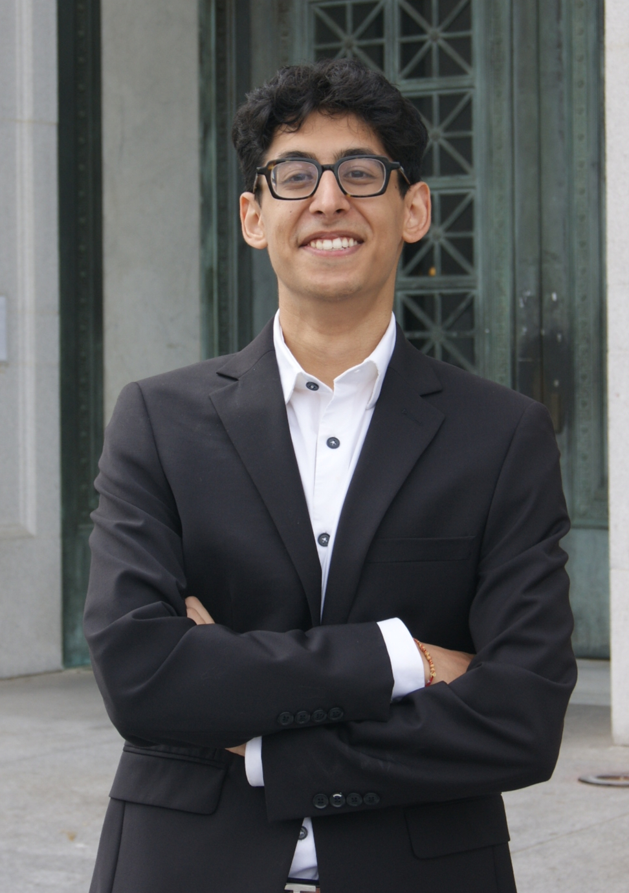
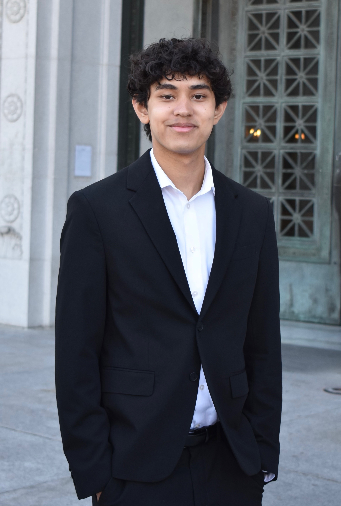
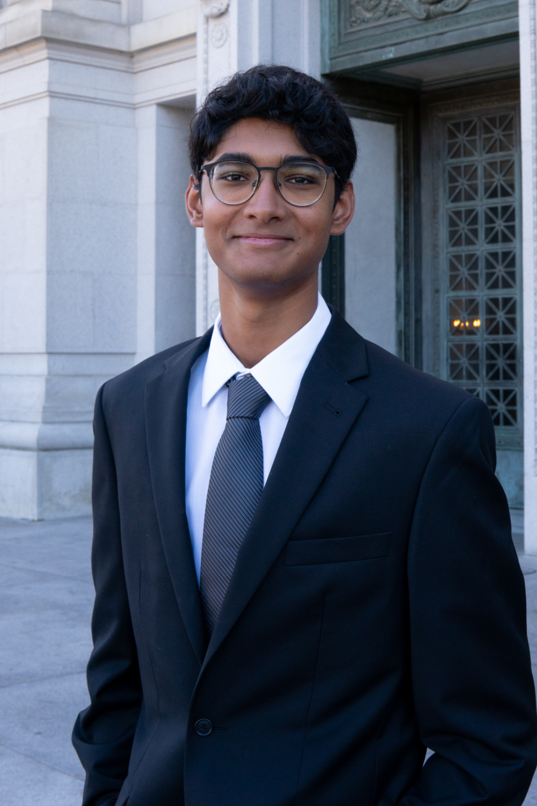
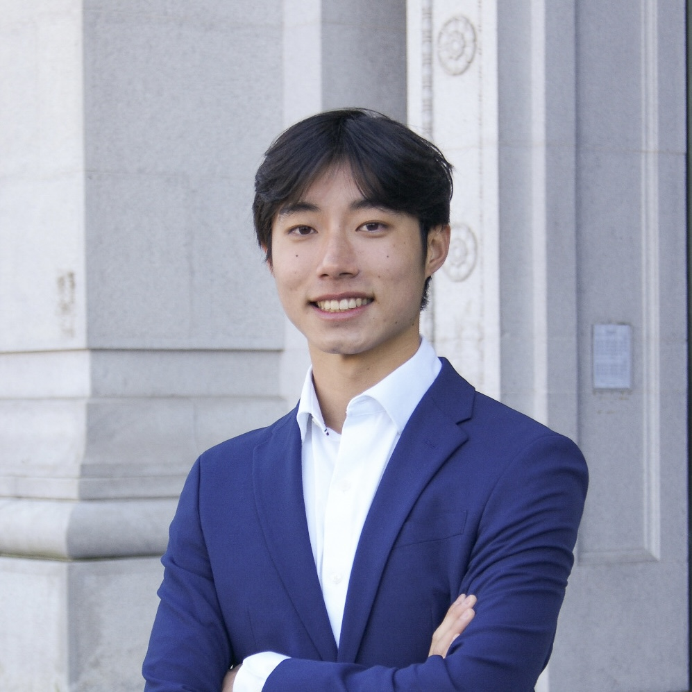

Executive
The Executive team manages the day-to-day operations of the organization while planning the semester's large-scale events and activities. From co-hosting speaker panels to leading our premier professional development workshops, the Executive team embodies the PBL values and the hallmarks of personal and professional success.

Krish Arora
Co-PresidentHi! My name is Krish Arora and I'm currently a Junior studying Data Science and Applied Mathematics & Modeling. My professional interests are oriented towards Software Engineering and AI/ML, with my research experience primarily focused on deep neural network optimization and topic modeling. This past summer I was an SDE Intern at Amazon and I am currently working at IBM as a Spring SDE Intern. Outside of work, I love to spend my free time exploring modern art museums, being overly caffeinated, going on random sf side questions, and going to the gym. Feel free to reach out if you have any questions or just want to chat I'm always down to yap :D

Stephanie Schaupp
Co-PresidentHi! I'm Stephanie, a Junior studying Energy Engineering. I'm interested in renewable energy, transportation startups, and engineering consulting. I've worked for the Department of Energy, and as a TPM for Zoox. I love meeting new people and making friends, so please feel free to reach out to coffee chat or with any questions!

Angelo Bountapanya
Senior Vice PresidentHi! My name is Angelo Bounthapanya, and I'm a junior from the Bay Area studying Economics. My professional interests include aspects of both finance and consulting. I previously interned at Praxis Ventures as a summer capital intern, and will be working at EY-Parthenon this summer. My hobbies include going to the gym, watching sports, and spending time with my friends. Feel free to reach out and schedule a time to talk.

Amanda Antonious
Vice President of OperationsHey! My name is Amanda and I’m a Junior studying Cognitive Science, Data Science, & Design. My career aspirations consist of working in technical product management. I'll be interning at Visa this summer as a TPM and i’ve previously interned at Glint Lab & Berkshire Hathaway for marketing/web dev. In my free time, I love spending time with friends, listening to music, cafe/restaurant hopping, staying active, & shopping!

Avik Gautam
Vice President of DevelopmentHi! My name is Avik and I'm a Junior studying Computer Science and Business Administration. I am interested in software engineering, as well as brand strategy, product marketing, and product management. Previously, I've worked on projects with Twitch, Bosch, AT&T, Gold Bond, and Tide and have been a SDE intern at Amazon. I enjoy playing volleyball, watching basketball and soccer, and playing or listening to music. Feel free to reach out and ask any questions!

Armaan Srireddy
Vice President of FinanceHey! My name is Armaan and I'm a junior studying energy engineering with a certificate in design innovation. engineering, and sustainability. In the past, l've been an CAD and Systems intern at Enerflex and an engineering intern at ORE. In my free time, I enjoy working out, reading, playing poker, and hanging out with friends. Feel free to reach out if you have any questions!

Ashley Chen
Vice President of ProjectsHi! My name is Ashley and I'm currently a junior studying Molecular and Cellular Biology. I'm super passionate about healthcare consulting, biotechnology, pharmaceutical sales, and just generally business development in healthcare! My previous experiences include psychophysics research at Caltech and pharma sales strategy at Novartis and AbbVie. In my free time, I love going to concerts, shopping, hanging out with my friends, and drinking coffee. Feel free to reach out if you have any questions!

Angel Gallegos
Internal Vice PresidentHi! My name is Angel and I'm a Junior studying Electrical Engineering and Computer Science and Bioengineering. I really love research and am interested in pursuing a future in R&D within biotech/medtech, with a focus on medical devices. In line with these goals, I'm currently a member of the Iain Clark lab. In my free time I enjoy thrifting, skating, and jiu jitsu!
Internal Networking
While not a committee that takes applicants, the Internal Networking committee is responsible for fostering the social environment of the organization. From planning the semesterly Member's Retreat to organizing countless social events throughout the semester, the Internal Networking committee works hard to encourage a tight-knit PBL community.

Minseo Park
Internal Networking ChairHi, my name is Minseo and I'm a sophomore studying Mechanical Engineering! My career interests lie in the fields of engineering design and research. Currently, I'm conducting research at the Biomimetic Millisystems Lab where I design multi-layer soft robots inspired by biological systems and develop new fabrication methods. I'm also a part of Berkeley Flight lab, where I'm researching a robotic model of the evolution of insect flight by constructing and analyzing aerial performance of a gliding robot. In my personal time, I skate competitively with Cal Figure Skating, work at the SLC, tutor high school students in math, chemistry, and biology, and play the guitar and piano. Feel free to reach out with any questions!

Sreeram Ranga
Internal Networking ChairHi guys! My name is Sreeram Ranga and I’m currently a junior studying Electrical Engineering and Computer Science (EECS). My career interests lie in the intersection of Entrepreneurship and Fintech. I built a couple cool things in that space that you can ask me about! My hobbies mainly include bouldering, tennis, eating, and listening to music. Feel free to reach out with any questions!

Andre Risz
Internal Networking ChairHey! My name is Andre, and I’m currently a second-year studying Economics and Global Studies. I’m interested in careers focus on strategy, consulting, and business transformation. Outside of academics and work, I enjoy football, mountain biking, hiking, running, and kite surfing, and I’m always happy to connect or answer any questions you have.

Kainoa Tomikawa
Internal Networking ChairClient Teams
CT Consulting spearheads PBL's consulting services. Working with a wide array of clients from budding start-ups to Fortune 500 firms, Client Teams allow members to take the knowledge and experience from their industry-specific committee curriculums and apply them to real world projects.

Isabel Xu
Project ManagerHello! My name is Isabel and I am a Sophomore studying Economics and Data Science. My career goals lie in accounting, strategy consulting, and corporate finance. I am particularly interested in how to transform the finance sector into one that is sustainable and ethical. I am an incoming intern at EY, and previously worked on projects for Blackrock and Roche. My personal hobbies include running, watching k-dramas, and trying new food spots with my friends to rate on Beli. Feel free to connect and I can't wait to meet everyone!

Kaitlyn Huang
Project ManagerHello! My name is Kaitlyn, and I am a Sophomore studying Molecular Environmental Biology. Professionally, I am interesting in pursuing the intersection between healthcare and business. I am currently doing research for Type 1 Diabetes at Bakar Labs and am an incoming product development intern at a pharmaceutical company. In my free time, I love traveling and trying dessert places!

Tiffany Hoang
Project ManagerHi! My name is Tiffany and I'm currently a Junior studying Molecular Cell Biology and Business Administration through the Robinson LSBE program. With my passions rooted in this intersection, I am especially interested in pursuing life science consulting and making an impact within innovative healthcare. My experience involves lab research at the IGI to develop CRISPR cures, and product marketing at Bio-Rad Laboratories. In my free time, I love doing nail art, cooking, cafe hopping, making matcha lattes, and shopping! Feel free to reach out if you have any questions!

Isabella Lee
Project ManagerHii! My name is Isabella and I’m currently a sophomore studying Cognitive Science and Data Science, and Design Innovation. My passion lies in creative and brand marketing strategy, and understanding how human-centered thinking can generate solutions that align with real-world data. My experiences are in entertainment, hospitality, and tech industries, where I’ve done GTM strategy and web development projects! Outside of school, I love dancing with KPGcal and AFXcomp, making matcha at Binge, and playing IM Volleyball! Let’s connect 💗

Yeonwoo Son
Project ManagerHey! My name is Yeonwoo and I’m currently a junior studying Computer Science. My professional interest are in Machine Learning, Autonomous Driving, and Robotics. I’ve previously interned at BMW, Scale AI, and Amazon. My hobbies include watching movies, hanging out with friends, and golfing. Feel free to reach out!

Andrew Choy
Project Manager
Anthony Serven
Project ManagerHey! My name is Anthony and I am a junior studying Applied Math. I hope to pursue a career in accounting and/or operations. Next summer I will be an intern in EY's audit service line in San Francisco. I enjoy seeing the natural patterns of the world through numbers, but I also love playing piano, singing, and running. Feel free to reach out if you'd like to chat!

Irene Li
Project ManagerHi! My name is Irene Li and I'm a sophomore intending to study Statistics and Public Health. I'm interested in the application of data analysis with biology and am hoping to work in clinical trials in the future. In the past couple semesters, I've worked on PBL's Lenovo and Life360 client teams to deliver strategy and marketing insights. Outside of PBL, I enjoy listening to music, hanging out with friends, and trying new drink places. Feel free to reach out if you'd like to chat!

Joline Surjorahardjo
Project ManagerHi! My name is Joline, and I'm a junior majoring in Cognitive Science and Linguistics. My professional interests center around strategic marketing, UI/UX design, and academia in computational linguistics and embodied cognition. In my free time I love cooking new recipes, raving, camping and going to corepower. Feel free to reach out for a coffee chat or if you have any questions :)

Aiden Park
Project ManagerHi! My name is Aiden and I'm currently a sophomore studying Business Administration and Data Science. I’m interested in strategy consulting and product management, particularly within finance and tech. In my free time, you’ll usually find me cooking, eating, or trying to get better at golf and pickleball. Feel free to reach out if you want to chat or have any questions!
Media
Unlike committee chairs, the Media Chairs work with EX to create all the visuals for the semester, including recruitment materials, Instagram posts, promotional videos, and more!

Lucas Chang
Media ChairHey, my name is Lucas and I’m a sophomore majoring in Economics and Data Science (classic). My professional interests include consulting, product management, and data analytics, but I’m still trying new things out. Outside of school, I’m really into pickleball, distance running, soccer, and backpacking!